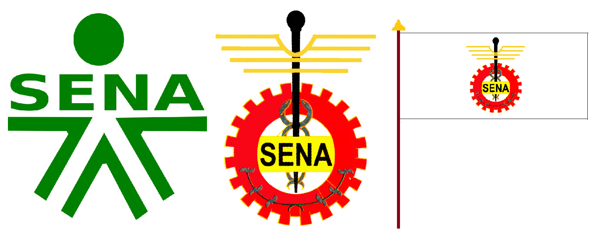

Editorial
Bienvenidos al Periódico Virtual del SENA. En esta edición, exploramos la importancia de la formación técnica y su impacto en el desarrollo profesional de los colombianos...
Equipo de Trabajo
- Deiby Ramírez - Director
- Deiby Ramírez - Editor Principal
- ChatGPT - Diseño
Reseña Histórica del SENA
El Servicio Nacional de Aprendizaje (SENA) fue fundado en 1957 y, desde entonces, ha brindado formación técnica y profesional a millones de colombianos que buscan aprender y encontrar una manera responsable de aportar sus conocimientos a la sociedad.
Aporte del SENA al País
El SENA ha sido un pilar fundamental en el desarrollo laboral y educativo de Colombia gracias a las modalidades de aprendizaje que brinda, ya sea técnico, tecnológico, cursos cortos, formación virtual y ayuda en la búsqueda de empleo.
Cultura Organizacional del SENA
Horizonte o Direccionamiento Institucional
Misión
El SENA tiene como misión formar integralmente a los aprendices para que logren un buen desempeño, cumpliendo su rol como trabajadores y emprendedores, además de formar personas cultas que contengan valores.
Visión
Ser la entidad más importante en Colombia en cuanto a formación técnica y tecnológica, apoyando la creación de empleo y el emprendimiento.
Valores
- - Compromiso
- - Responsabilidad
- - Excelencia
- - Solidaridad
Principios
- - Equidad
- - Inclusión
- - Innovación
Objetivos
- - Formar a los aprendices con altos estándares de calidad
- - Contribuir al desarrollo del país a través de la formación profesional
Identidad Corporativa
Himno
CORO
Estudiantes del SENA adelante
Por Colombia luchad con amor
Con el animo noble y radiante
Transformémosla en mundo mejor
I
De la patria el futuro destino,
en las manos del joven está,
el trabajo es seguro camino,
que el progreso a Colombia dará.
II
En la forja del SENA se forman,
hombres libres que anhelan triunfar,
con la ciencia y la técnica unidas,
nuevos rumbos de paz trazarán.
III
Hoy la patria nos grita sentida,
¡estudiantes del SENA triunfad!
solo así lograréis en la vida,
más justicia, mayor libertad.
IV
Avancemos con fuerza guerrera,
¡estudiantes con firme tesón!
que la patria en nosotros espera,
su pacífica revolución.
Bandera y Escudo
Sopa de Letras de la Cultura Institucional del SENA
| L | C | R | Y | I | N | N | O | V | A | C | I | O | N | C | J | G | F | N | P |
| C | S | I | A | Y | L | U | E | M | N | C | Y | A | S | L | J | O | P | U | Q |
| Z | Y | L | R | P | F | J | V | U | O | H | F | B | T | J | M | N | N | S | F |
| H | S | G | H | R | I | N | G | J | H | V | J | E | C | E | T | I | C | A | D |
| Y | F | V | L | B | C | E | K | N | M | F | J | B | V | G | D | O | T | E | X |
| U | V | I | J | B | V | D | H | G | L | B | C | E | V | Y | R | S | T | P | F |
| D | K | L | Q | Y | V | M | Y | E | C | O | M | P | R | O | M | I | S | O | R |
| D | W | P | R | E | S | P | O | N | S | A | B | I | L | I | D | A | D | N | O |
| Z | B | B | D | E | S | A | R | R | O | L | L | O | A | S | Q | X | C | Z | Y |
| G | J | C | L | D | H | B | M | D | T | I | Y | J | E | F | P | Q | W | I | I |